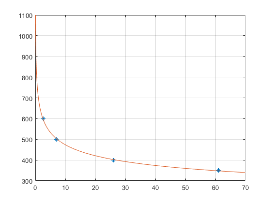

clc; clear all; syms Y X x=[61 26 7 2.6]; y=[350 400 500 600]; plot(x,y,'*') hold on m=length(x); % Here the linearization equation is log10(y)=log10(a)+blog10(x) % Let Y=log10(y);A0=log10(a);A1=b;X=log10(x) % Now the simplified equation is Y=A0+A1X Which is a linear equation % Now to solve the equation we need the values of % sum of xi,x2i,yi,xiyi x=log10(x); y=log10(y); % calculating the values by loop xi=0; x2i=0; yi=0; xiyi=0; for i=1:m xi=xi+x(i); x2i=x2i+x(i)^2; yi=yi+y(i); xiyi=xiyi+x(i)*y(i); end A1=(m*xiyi-xi*yi)/(m*x2i-xi^2); avg_X=xi/m; avg_Y=yi/m; A0=avg_Y-A1*avg_X; % Now calculating the values of a and b % Here A0=log10(a) So, a=10^A0; b=A1; fprintf('The value of a = %f\n',a); fprintf('The value of b = %f\n',b); % Now the function is Y(X)=a*X^b; grid on fplot(Y);
The value of a = 701.991948 The value of b = -0.170855